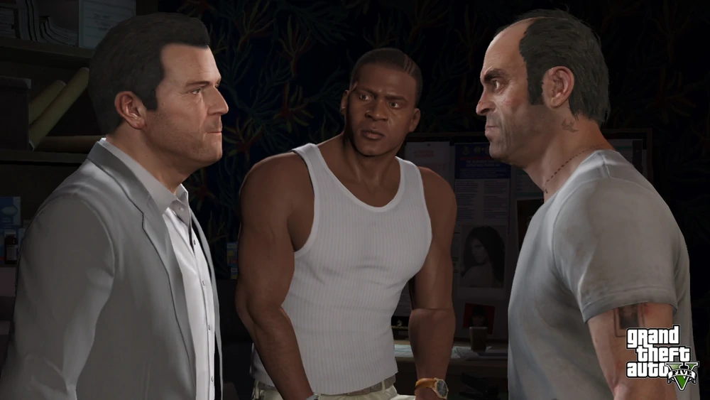
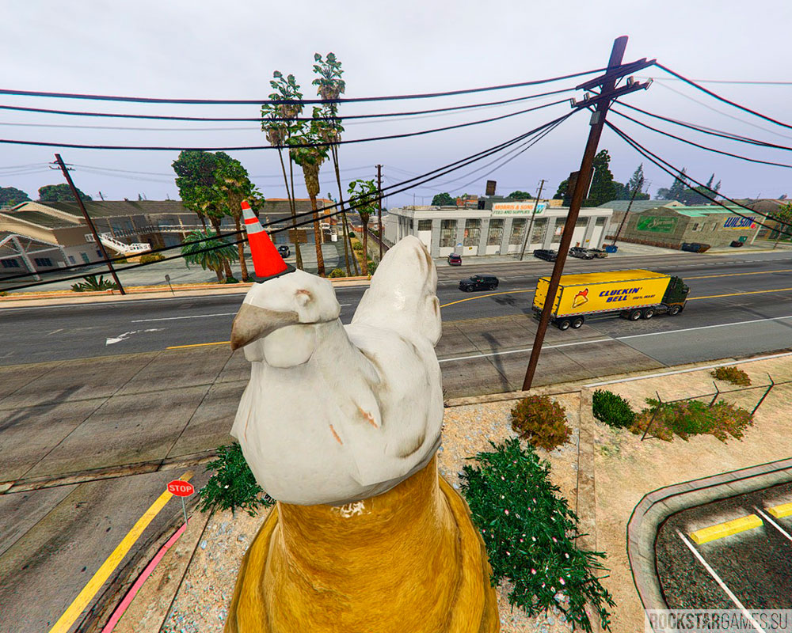
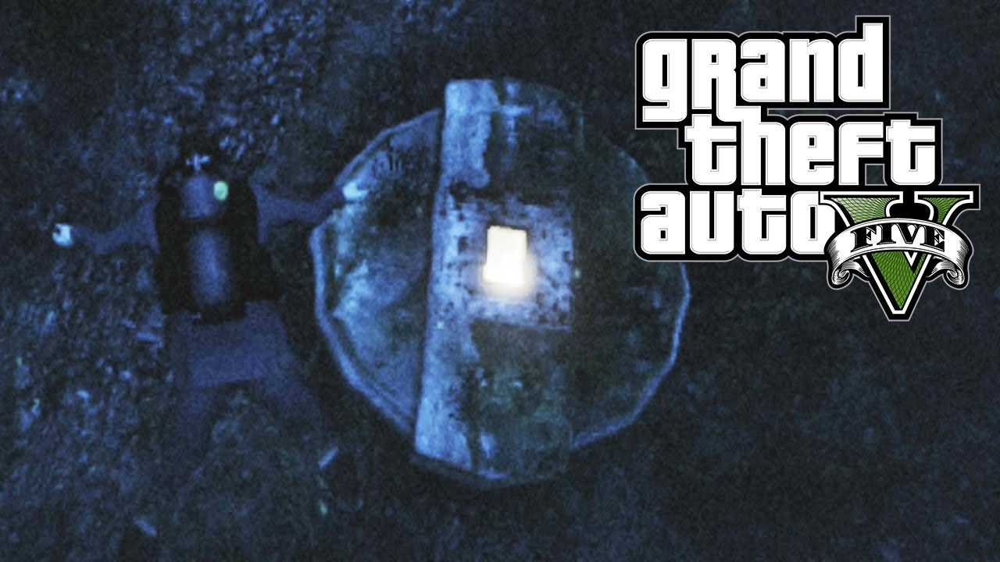
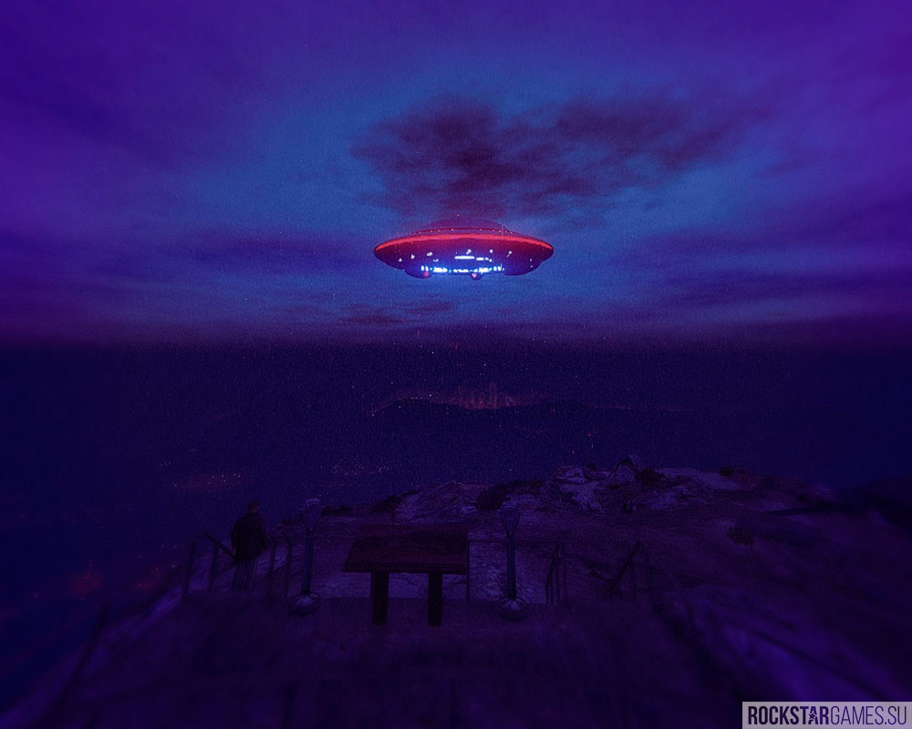

Пасхалки для гта5

Сюжет игры
- События игры разворачиваются в Лос-Сантосе в наше время. В игре присутствуют три главных героя.
Первый — семьянин Майкл, в прошлом — успешный грабитель, чья семейная жизнь катится под откос. Участвует в неофициальной программе по защите свидетелей. Влез в долги к дону мексиканской мафии, из-за чего вынужден «вернуться в игру».
Второй — Франклин, делец, работающий на армянское автомобильное агенство. Самый молодой, стильный и ловкий из всей троицы, пытается выбраться из гетто (но делает это странным способом). Мечтает проложить себе путь по криминальной лестнице. Встретив Майкла, понимает, что он может ему в этом помочь.
Третий — Тревор, профессиональный преступник. Ему также сорок лет, в прошлом работал с Майклом. Бывший пилот ВВС США. Наркоман, склонен к насилию, крайне жесток. Имеет собственное криминальное предприятие «Тревор Филипс Энтерпрайзис», которое занимается торговлей наркотиками и оружием.

Курица и конус
Странная вещь приключилась со статуей курицы в Палето Бэй. На первый взгляд, может показаться, что она была осквернена вандалами, но это не так. Данный конус является прямой отсылкой на GTA III и GTA IV, где игрок мог также лицезреть конус на голове определённого памятника. Но если в третьей части серии конус был актом вандализма, а в четвёртой — насмешкой над политиками, то в пятой части, этот конус был оставлен работниками Cluckin’ Bell, чтобы прикрыть отсутствие гребешка у курицы. Ведь без него вскрывается страшная правда: курица на постаменте — всего лишь голубь.
Люк из сериала «Lost».
Морское дно в серии GTA расцвело в новой части, как никогда ранее. Среди диковинных растений и животных, можно обнаружить тот самый люк из сериала «Lost», в котором иногда можно заметить свет и услышать постукивания. Стуки доносятся из бункера и являются ничем иным, как азбукой Морзе. На английский её можно расшифровать как — «Hey, you never call, how d’you fancy going bowling?» (Эй, ты никогда не звонишь, как на счёт пойти в боулинг?). Само собой, это является отсылкой на Романа из GTA IV, который постоянно надоедал своими звонками.
НЛО.
В ГТА 5 можно насчитать пять больших летающих тарелок, одна из которых принадлежит тематическому кафе на Вайнвуде. Остальные же ошибочно относят к кораблям инопланетного происхождения. Первую летающую тарелку можно найти под водой, близ Палето Бэй. Она без опознавательных знаков, как остальные, поэтому многие счиПтаю её настоящей. Интересный факт: Не многие знают, но на данном НЛО имеется некая надпись на латинице. Но даже на ПК-версии надпись почти не разобрать. Все последующие летающие тарелки можно увидеть только после достижения 100% прохождения. НЛО точно такого же типажа можно увидеть над «холмом хиппи», где лежит обломок космического корабля.Следующее НЛО появляется на горе Чилиад во время дождя, ровно в 3 часа ночи. Многие игроки считают его голограммой, так как НЛО никак не взаимодействует с игроком, может быть замечено на определённой дистанции и при определённых условиях и не имеет коллизии. Само НЛО выглядит, как предыдущее, и также имеет логотип «FIB».